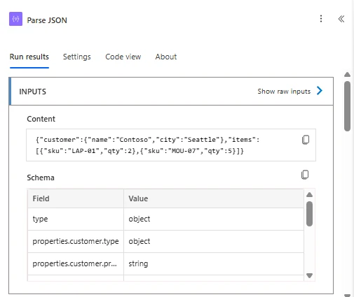
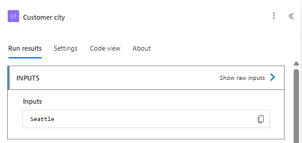
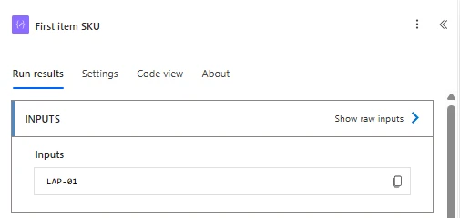

- Power Automate
- Level 2 · Working with data · 2 of 7
Parse JSON and schemas
Data often arrives as JSON text: from an HTTP call, an agent, a text column or a file. Until the flow knows its shape, it can't offer the fields in dynamic content.
What Parse JSON does
WhatReads JSON text against a schema (a description of the shape) and gives every field a name.
WhySo you can pick fields from the dynamic content list, and the flow checks the shape for you.
DemoAn order with a customer object and an items list.
Text in, fields out
JSON text {"customer":{…},"items":[…]}
Parse JSON: does it match the schema?
Yes
Fields in dynamic content: customer name, city, items, sku, qty
No
The action fails with a schema validation error
{"customer":{"name":"Contoso","city":"Seattle"},
"items":[{"sku":"LAP-01","qty":2},{"sku":"MOU-07","qty":5}]}
Reading the parsed fields
The demo's paths and values
| Expression | Result |
|---|---|
body('Parse_JSON')?['customer']?['city'] | "Seattle" |
first(body('Parse_JSON')?['items'])?['sku'] | "LAP-01" |
length(body('Parse_JSON')?['items']) | 2 |
body('Parse_JSON')?['items'][1]?['qty'] | 5 |


first(body('Parse_JSON')?['items'])?['sku']| Piece | What it does |
|---|---|
body('Parse_JSON') | The parsed object. |
?['items'] | The items list inside it. |
first(...) | The first item. |
?['sku'] | Its sku: LAP-01. |
Getting the schema right
Schema in three steps
Select Use sample payload to generate schema
Paste a real example and select Done
Review: required fields and types
| Check | Why | Fix |
|---|---|---|
required list | A field listed as required that's sometimes missing fails the action | Remove it from required |
| Fields that can be null | "type": "string" rejects null | Use "type": ["string", "null"] |
| Numbers sent as text | Type mismatch | Match the type the source really sends |
When you don't need Parse JSON
| Parse JSON | json() | |
|---|---|---|
| Fields in dynamic content | Yes | No |
| Validates the shape | Yes | No |
| Extra action | Yes | No: inside any expression |
| Best for | Many fields, used often | One value, once |
json(outputs('Response_text'))?['customer']?['name']| Piece | What it does |
|---|---|
json(...) | Turns the text into an object, inline. |
?['customer']?['name'] | Reads the field: Contoso. |
New to this? Start from the basics optional
JSON text vs object: the same characters can be plain text or a real object. Only an object lets you read fields with ?['name'].
Schema: which fields exist and what type each one is.
Common mistakes
- Parsing something that's already an object (from a connector). You don't need to.
- Leaving every field in
required, so optional data breaks the flow. - Not allowing null in the schema for fields that can be empty.
- Calling
json()on an object instead of text.